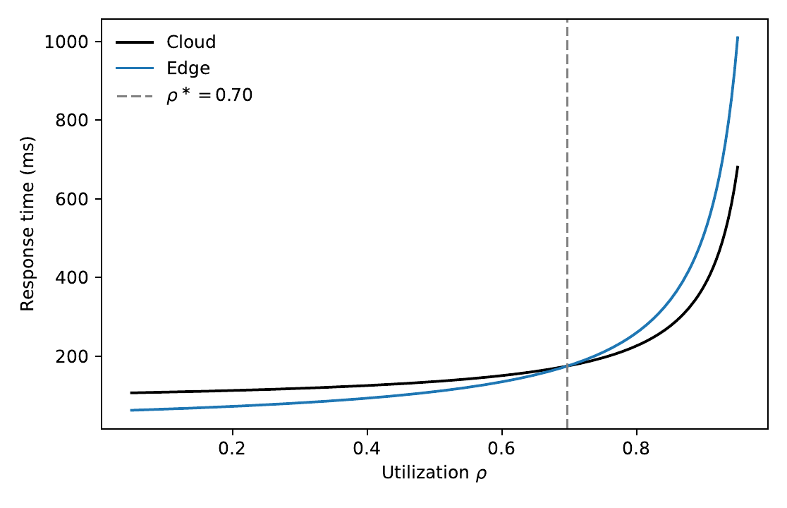

Let $\rho \in (0,1)$ be utilization, $\mu$ the service rate in requests per second, and $L$ the network delay in milliseconds. The response time in milliseconds is
$$T(\mu,\rho,L) = \frac{1000}{\mu(1-\rho)} + L.$$
The first term is the mean sojourn in an M/M/1 queue, converted from seconds to milliseconds. At $\rho \ge 1$ the sojourn is undefined.
The base parameters in the draft are a cloud service at $\mu = 33$ requests per second and $L = 75$ ms, from the MLPerf Inference v3.0 note, and an edge device at $\mu = 20$ requests per second and $L = 10$ ms, from the Jetson AGX Xavier note. The crossover $\rho^\ast$ is the smallest root of $T_{\mathrm{edge}}(\rho) - T_{\mathrm{cloud}}(\rho) = 0$. At those parameters the root sits near $0.70$. Edge is the faster curve only when utilization is below that root.

Response time against utilization at the base hardware. The dashed line is the crossover. Above it, the cloud curve is the faster of the two.
The Office of Management and Budget has published three public AI inventories, for 2023, 2024, and 2025. None of them records a service rate, a latency, or a utilization. They record a name, a description, and a stage. The stage is the stage the agency wrote down. It is not an observed deployment, and a larger list is not, by itself, a higher arrival rate.
The inventories enter the latency model only as weights: the share of rows whose descriptions use the operational language the screen treats as edge-suited, such as field work, real-time constraints, weak connectivity, or local processing. That share scales the gap between the cloud time and the edge time. The gap is a gain only while $\rho < \rho^\ast$.
The public draft is the July 2026 working paper, doi:10.2139/ssrn.7141719. The three-year extension uses the same hardware model. The 2025 release does not move $\rho^\ast$.
@unpublished{daneshi2026edge,
author = {Daneshi, Ashkaan},
title = {Conditional value of edge {AI} for {U.S.} federal agencies},
year = {2026},
note = {SSRN Working Paper 7141719},
doi = {10.2139/ssrn.7141719}
}